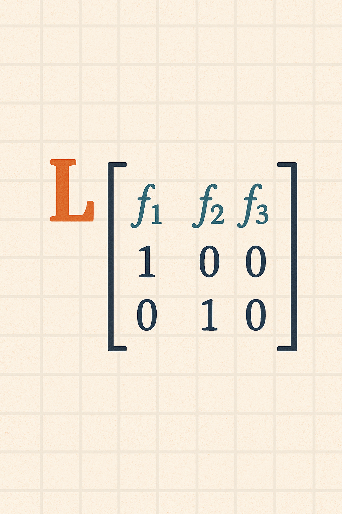

Crescimento populacional e estrutura etária
9833 - Bases da Matemática e Estatística para Ciências do Mar
Fabio Cop Ferreira e William Remo Pedroso Conti
↗ Natalidade → Aumento no tamanho populacional
Mortalidade → Declínio no tamanho populacional
Taxa de Crescimento = Natalidade − Mortalidade
Estrutura Etária: contribuição de cada classe etária (idade) na população
Porque a população continuará crescendo mesmo se a taxa de fecundidade cair abaixo do nível de reposição (±2 filhos por mulher)?
Como prever o número de indivíduos em cada classe etária e o tamanho populacional no futuro?
Como prever o número de indivíduos em cada classe etária e o tamanho populacional no futuro?
Como prever o número de indivíduos em cada classe etária e o tamanho populacional no futuro?
Patrick Holt Leslie
31 January 1912 – 12 October 1993
Partindo das contribuições da fecundidade e sobrevivência por classe etária,
$$\begin{cases} N_1^{(t+1)} = F_1 \times N_1^{(t)} + F_2 \times N_2^{(t)} + F_3 \times N_3^{(t)} + F_4 \times N_4^{(t)} \\ N_2^{(t+1)} = S_1 \times N_1^{(t)} \\ N_3^{(t+1)} = S_2 \times N_2^{(t)} \\ N_4^{(t+1)} = S_3 \times N_3^{(t)} \end{cases}$$Propôs que a relação entre as classes ao longo do tempo podiam ser organizadas em formato de matriz.
$$\begin{pmatrix} N_1^{(t+1)} \\ N_2^{(t+1)} \\ N_3^{(t+1)} \\ N_4^{(t+1)} \end{pmatrix} = \begin{pmatrix} F_1 & F_2 & F_3 & F_4 \\ S_1 & 0 & 0 & 0 \\ 0 & S_2 & 0 & 0 \\ 0 & 0 & S_3 & 0 \end{pmatrix} \times \begin{pmatrix} N_1^{(t)} \\ N_2^{(t)} \\ N_3^{(t)} \\ N_4^{(t)} \end{pmatrix}$$Matriz de Projeção P
Matriz de Projeção P
A matriz de projeção P determina qual será o formato da estrutura etária populacional, ou seja, as contribuições proporcionais de cada classe.
Matriz de Projeção P
Em notação matricial
$$\mathbf{N^{(t+1)} = P \times N^{(t)}}$$
Projetando o tamanho populacional no futuro
$\mathbf{N^{(1)} = P \times N^{(0)}}$
$\mathbf{N^{(2)} = P \times N^{(1)} = P \times P \times N^{(0)} = P^2 \times N^{(0)}}$
$\mathbf{N^{(3)} = P \times N^{(2)} = P \times P \times N^{(1)} = P \times P \times P \times N^{(0)} = P^3 \times N^{(0)}}$
$\mathbf{N^{(t+1)} = P^{t+1} \times N^{(t)}}$